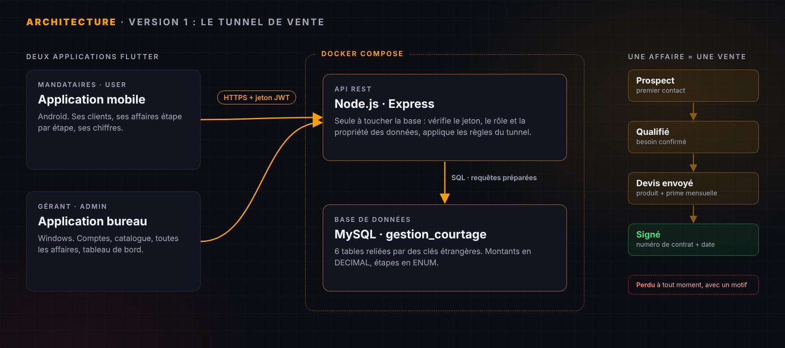
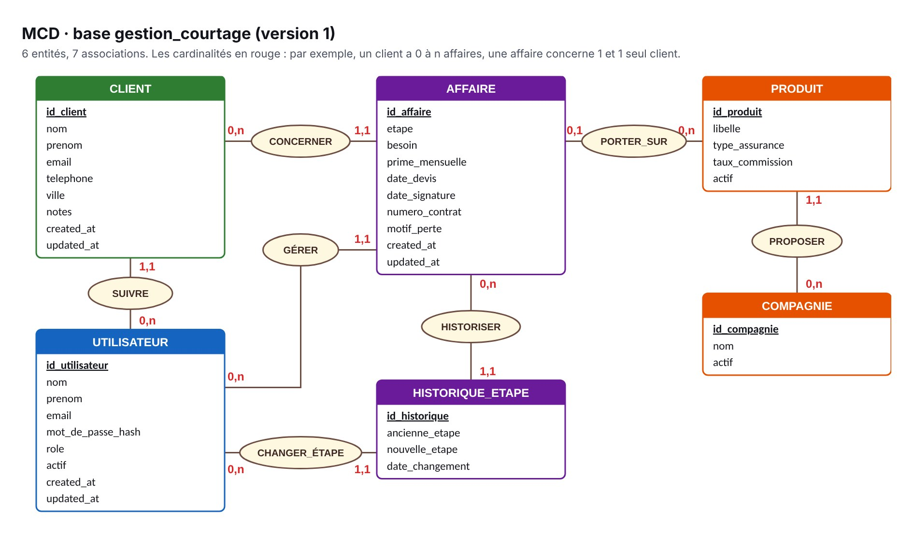
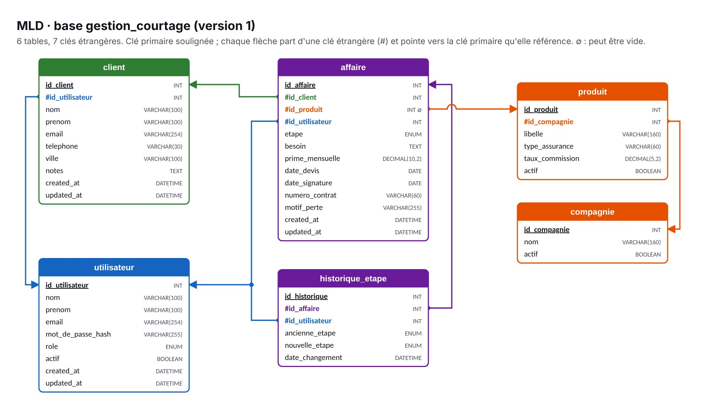

Projet de deuxième année de BTS, en cours
Gestion de cabinet
Application de suivi des ventes pour un cabinet de courtage en assurance : chaque vente avance du prospect au contrat signé, sur le terrain avec l'application mobile des mandataires et au bureau avec l'application du gérant. La version 1 est volontairement réduite à ce tunnel de vente. Le cahier des charges, le cahier technique et la base de données (MCD, MLD et script SQL de 6 tables) sont terminés ; le développement de l'API commence.

En bref
Un cabinet de courtage travaille avec des mandataires qui vendent des contrats d'assurance (prêt, habitation, automobile, prévoyance, santé) proposés par plusieurs compagnies. Chaque contrat signé rapporte une commission, calculée sur la prime payée par le client.
La version 1 se concentre sur l'essentiel : suivre chaque vente étape par étape, du premier contact jusqu'à la signature. Le mandataire le fait sur le terrain avec l'application mobile ; le gérant suit tout le cabinet depuis l'application bureau. Le document de départ du client était trop gros pour un premier livrable : avec le client et le professeur, on l'a recentré sur ce tunnel de vente.
Le problème à résoudre
Aujourd'hui, le suivi des prospects se fait sur papier, sur Excel ou de mémoire. La problématique du cahier des charges : comment permettre à un cabinet de courtage de suivre chaque vente, du prospect au contrat signé, depuis le terrain comme depuis le bureau ?
- Prospects perdus de vue : sans suivi, un prospect non relancé est un client perdu.
- Avancement des ventes inconnu : le gérant ne sait pas quelles ventes sont en cours, ni à quelle étape.
- Aucun indicateur : ni taux de transformation, ni primes signées, ni commissions prévues.
Le tunnel de vente
Chaque vente est une affaire, qui passe par quatre étapes. Elle peut être perdue à tout moment. Chaque changement d'étape est enregistré avec son auteur et sa date.
| Étape | Ce qui se passe | Ce qu'on saisit |
|---|---|---|
| Prospect | Un contact intéressé est identifié | Le client et son besoin |
| Qualifié | Le besoin est confirmé | Le besoin détaillé et le produit visé |
| Devis envoyé | Une proposition chiffrée est remise | Le produit, la prime mensuelle, la date du devis |
| Signé | Le client a signé le contrat | Le numéro de contrat et la date de signature |
| Perdu | La vente est abandonnée | Le motif de la perte |
- La commission d'une affaire signée se calcule : prime mensuelle × taux de commission du produit. Par exemple, 61,20 € à 30 % donnent 18,36 €.
- Le taux de transformation, c'est le nombre d'affaires signées divisé par le nombre d'affaires créées.
Deux applications, deux rôles
Le mandataire et le gérant n'ont ni les mêmes écrans ni les mêmes droits : il y a donc deux applications Flutter, une demande d'évolution du client.
| Application mobile (Android) | Application bureau (Windows) |
|---|---|
| Pour le mandataire (rôle user), sur le terrain | Pour le gérant (rôle admin), au bureau |
| Connexion | Connexion |
| Ses clients et prospects : création, modification, recherche | Comptes des mandataires : création et désactivation |
| Ses affaires classées par étape | Catalogue : compagnies et produits, avec leur taux de commission |
| Détail d'une affaire : changement d'étape, devis, signature ou perte | Toutes les affaires du cabinet, filtrées par étape et par mandataire, avec leur historique |
| Mes chiffres : affaires par étape, signatures du mois, commissions estimées | Tableau de bord : taux de transformation, primes signées, commissions, classement |
- Un mandataire ne voit que ses propres clients et ses propres affaires : c'est l'API qui filtre, pas l'application.
- On désactive un compte au lieu de le supprimer, pour garder l'historique de ses affaires.
L'architecture et les choix techniques
Le cahier technique justifie chaque choix. Le principe : des technologies que je maîtrise déjà, et un seul point d'entrée vers les données.
- Flutter pour les deux applications : un seul langage, Dart, et une technologie déjà utilisée pendant mon stage (SYNCRO). Le code est rangé en écrans, modèles et services ; les écrans se mettent à jour avec Provider.
- Node.js avec Express pour l'API : c'est le seul composant qui touche à la base. Il vérifie les droits, applique les règles du tunnel et fait les calculs. Express est minimaliste : chaque route et chaque contrôle sont écrits à la main.
- MySQL : les données sont liées (un client a des affaires, une affaire porte sur un produit), et les clés étrangères garantissent la cohérence.
- Docker Compose lance la base et l'API en une seule commande, de la même façon sur n'importe quel poste.
- Les règles du tunnel, appliquées par l'API : produit et prime obligatoires au devis, numéro de contrat et date à la signature, motif en cas de perte ; une affaire signée ou perdue ne change plus d'étape.
La base de données
J'ai conçu la base avec la méthode Merise : le MCD, puis le MLD, puis le script SQL pour MySQL 8. La base gestion_courtage compte 6 tables, partagées par les deux applications : utilisateur, client, compagnie, produit, affaire et historique_etape.


- Des clés étrangères sur toutes les relations : une affaire ne peut pas exister sans client, et un client qui a des affaires ne peut pas être supprimé.
- Les montants en
DECIMAL, jamais enFLOAT, pour éviter les erreurs d'arrondi. - Les étapes en
ENUM: une liste fermée de cinq valeurs, la base refuse une étape qui n'existe pas. - Des contraintes
CHECK: le taux de commission est entre 0 et 100, la prime ne peut pas être négative. - La commission n'est pas stockée : elle se calcule, pour ne jamais avoir une valeur fausse si la prime est corrigée.
- Un historique des étapes : chaque changement est écrit dans
historique_etape, dans la même transaction que la mise à jour de l'affaire.
Une requête par écran
Chaque écran correspond à une requête de l'API. Elles ont été testées sur un jeu de données fictives. Le ? est rempli par l'API avec l'utilisateur connecté : ce sont des requêtes préparées.
| Écran | Requête | Résultat sur les données fictives |
|---|---|---|
| Mobile · Mes affaires | SELECT c.nom, a.etape FROM affaire a JOIN client c ON c.id_client = a.id_client WHERE a.id_utilisateur = ?; | Leroy, signé · Moreau, devis envoyé · Blanc, qualifié |
| Mobile · Mes chiffres | SELECT SUM(a.prime_mensuelle * p.taux_commission / 100) FROM affaire a JOIN produit p ON p.id_produit = a.id_produit WHERE a.id_utilisateur = ? AND a.etape = 'signe'; | 21,66 € de commissions estimées |
| Bureau · Tableau de bord | SELECT etape, COUNT(*) AS nb FROM affaire GROUP BY etape; | 3 signées, 2 perdues, 1 prospect, 1 qualifiée, 1 devis envoyé |
La sécurité et le RGPD
- Trois contrôles à chaque requête : le jeton JWT est-il valide, le rôle est-il autorisé, la donnée appartient-elle à cet utilisateur ? Sinon, l'API répond 401 ou 403.
- Mots de passe hachés avec bcrypt, jamais stockés en clair.
- Requêtes préparées uniquement, contre l'injection SQL. Le compte MySQL de l'API peut seulement lire et modifier les données : il ne peut ni créer ni supprimer de table.
- Le mot de passe de la base et la clé JWT sont dans un fichier d'environnement, jamais dans le code ni sur GitHub. Les échanges passent en HTTPS.
- RGPD : seules les données utiles au suivi des ventes sont collectées (identité, coordonnées, besoin), et le développement comme la démonstration utilisent uniquement des données fictives.
Où en est le projet
Le cahier des charges et le cahier technique de la version 1 sont rédigés (21 octobre 2026). La base de données est terminée : MCD, MLD, schéma relationnel et script SQL.
- Prochaine étape : un jeu de données fictives, puis l'API Node.js et ses tests (cas autorisés et cas refusés pour chaque route, règles du tunnel).
- Ensuite, les écrans des deux applications, puis la recette avec le client et les guides pour le gérant et le mandataire.
- Évolutions prévues après la version 1 : pièces justificatives, suivi des commissions réellement versées, alertes et relances, agenda, versions iOS et macOS.
Compétences mobilisées
- Analyser un besoin, le recentrer avec le client et le traduire en cahier des charges.
- Prendre en compte des demandes d'évolution (deux rôles, deux applications, version 1 réduite).
- Choisir et justifier une architecture technique.
- Concevoir une base de données relationnelle : MCD, MLD, script SQL et contraintes.
- Prévoir les habilitations, la sécurité et la conformité RGPD dès la conception.
- Prévoir l'installation avec Docker, les tests et l'accompagnement des utilisateurs.
Une question sur ce projet ?
Je serai ravi d'en parler plus en détail lors d'un échange.